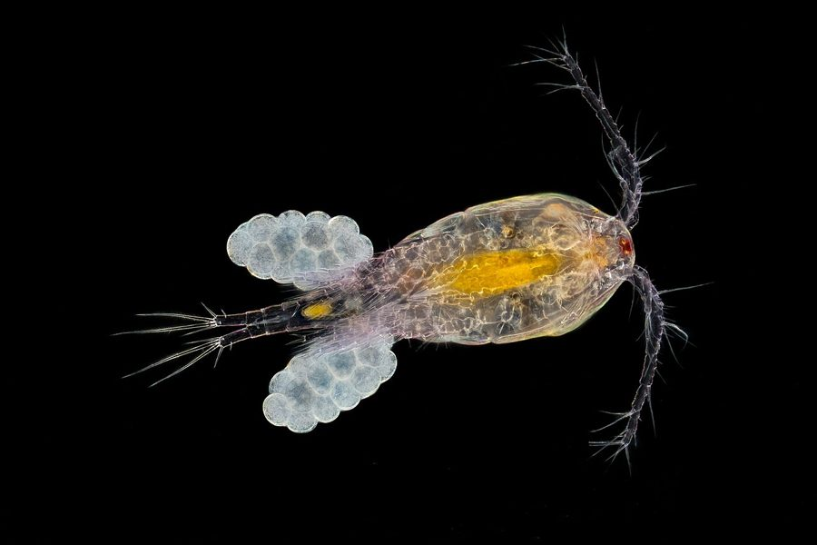

साइक्लोप्सCyclops Copepod
Cyclops · Cyclopidae · CRU-0006

- Scientific name वैज्ञानिक नाम
- Cyclops O.F. Müller, 1776
- Family कुल
- Cyclopidae
- Hindi हिंदी
- साइक्लोप्स
- Local names स्थानीय नाम
- cyclops, saiklops, pani ka kida, copepod
- Status here यहाँ की स्थिति
- native
- Movement आवागमन
- Resident, here all year
- IUCN IUCN
- not evaluated
- Review समीक्षा
- audited and independently read
When to look कब देखें
Present all year. साल भर मौजूद।
Uses and possibilities उपयोग और संभावनाएँ
Drawn from the documented uses in the profile below, where each is labelled traditional, current or a research lead. All uses →
Tell it apart from इनसे अलग पहचानें
साइक्लोप्स / Cyclops Copepod
Cyclops O.F. Müller, 1776 — Cyclopidae
साइक्लोप्स — तालाब के पानी का सबसे आम सूक्ष्म जीव: एक आँख वाला छोटा क्रस्टेशियन, जो मछली के बच्चों का मुख्य भोजन है। पहले यह नारू (गिनी वर्म) रोग की कड़ी था; भारत को सन 2000 में नारू-मुक्त घोषित किया गया। बिना सूक्ष्मदर्शी जाति की पहचान संभव नहीं, इसलिए यह विवरण वंश-स्तर पर है।
Quick Identification त्वरित पहचान
| Feature | Description |
|---|---|
| Size | 0.5–2 mm; larger than Daphnia; easily visible under a hand lens |
| Body shape | Elongated, segmented (11 segments in adult), cylindrical; narrower than Daphnia |
| Eye | One large, median, simple eye (distinctive "cyclops" character) |
| Antennae | Long, segmented first antennae used for swimming; second pair much shorter |
| Legs | Five pairs of swimming legs with long setae (hairs); jointed and flexible |
| Tail | Forked tail with two long, feathery tail filaments (furcae) bearing spines |
| Colour | Clear to translucent; may appear brownish or yellowish from internal organs |
| Movement | Jerky, bouncing motion; faster and more erratic than Daphnia |
Field tip: In a jar of pond water held to the light, look for a small, transparent crustacean with a single large median eye and long feathery swimming legs. The forked tail with two filaments is distinctive. Copepods are more visible than Daphnia and move faster and more randomly. This genus-level profile covers the most common copepods in eastern UP.
हिंदी — कैसे पहचानें: तालाब के पानी में दिखने वाला छोटा, पारदर्शी कीड़ा, एक बड़ी आँख, लंबी टाँगें। पूँछ में दो लंबी शाखाएँ। डैफ्निया से बड़ा और अधिक दौड़ने वाला।
Morphology आकारिकी
Biometrics (copepod genus Cyclops, plains populations):
| Measurement | Range |
|---|---|
| Body length (without tail filaments) | 0.5–2 mm |
| Total length (with tail filaments) | 1.5–3 mm |
| Antennule length | 0.3–0.8 mm |
| Tail filament length | 0.2–0.4 mm |
| Eggs per batch | 20–100 |
| Generations per season | 6–12 in warm water |
Body structure: The body is divided into a prosome (the front 6 segments including head and first body segments) and an urosome (the rear 5 segments including the tail). The cephalothorax (head and first body segment fused) is the largest segment. The eye is a single median ocellus.
Appendages: First antennule (antennae) is long, segmented, and used for sensing and for swimming strokes. Second antennae are much shorter. Five pairs of swimming legs (thoracic legs) are jointed and paddle-like, with long setae for propulsion. The tail (telson) splits into two furcae (tail branches) bearing long setae and spines.
Reproduction: Females lay eggs in a sac attached to the abdomen; eggs hatch as nauplii (larvae). Males and females occur; males are smaller and have curved antennules for grasping females during mating.
हिंदी: शरीर 11 खंडों में बँटा हुआ। सिर पर एक बड़ी आँख। तीन जोड़ी लंबी टाँगें, खूब बाल वाली। पूँछ में दो शाखाएँ। नर छोटे होते हैं।
Behaviour & Ecology व्यवहार और पारिस्थितिकी
Cyclops are the most abundant free-living copepods in freshwater. They are voracious feeders, consuming algae, bacteria, small protozoa and organic detritus. Unlike Daphnia (which filter-feed), copepods are raptorial predators: they hunt by sight and feel, using their antennae to sense prey vibrations. They are also cannibalistic — adults eating nauplii and juvenile copepods.
Cyclops are found in every type of freshwater habitat in eastern UP: ponds, ditches, rice paddies, wells, and the margins of larger water bodies. In temporary ponds that dry seasonally, copepods survive as dormant embryos in dried sediment, hatching when water returns.
They form the middle rung of the freshwater food chain: preyed upon by small fish (Zebrafish, Mola Carplet), large water bugs, and water birds. They are also cannibalistic — larger copepods eat smaller ones.
Historical significance — Guinea Worm: The guinea worm Dracunculus medinensis develops in Cyclops species. When contaminated water is drunk, the tiny worm larvae are consumed with the copepod; they develop inside the human body and emerge through the skin a year later, causing severe pain and disability. This infection was endemic in parts of India until the 1990s. Through a global eradication program (providing safe water and filtering contaminated water through cloth), India was certified guinea-worm-free in 2000. The presence of Cyclops does not mean the risk of guinea worm exists in the region — the worm has been eradicated.
हिंदी: शिकारी होता है, जीवंत शिकार पकड़ता है। हर तालाब में होता है। छोटी मछली, जलीय कीड़े और पक्षी इसे खाते हैं। सौ साल पहले गिनी वर्म (ड्रैकुलोसिस) की बीमारी इसमें से फैलती थी, लेकिन भारत 2000 से इस रोग से मुक्त है।
Life Cycle / Phenology जीवन चक्र
| Stage / season | Event |
|---|---|
| March–May | Populations increase as water warms; reproduction begins |
| Eggs | Laid in sacs by females; 20–100 eggs per sac; incubation 3–7 days in warm water |
| Nauplii | Hatch from eggs; six naupliar stages (N1–N6) over 5–10 days |
| Copepodites | Six juvenile stages (C1–C6) over 10–20 days; growth rapid in warm water |
| 15–25 days | Egg to adult maturity at optimal temperature (25°C) |
| June–September | Peak populations in warm months; multiple generations; rapid reproduction |
| October–February | Populations decline in winter; reproduction slower; dormant eggs and diapause in some species |
| Lifespan | 2–6 weeks in warm water; several months total including dormancy |
हिंदी: अंडे से 2-3 हफ़्ते में बड़े होते हैं गर्मी में। कई पीढ़ियाँ साल में। सर्दी में धीमा पड़ जाते हैं। लाखों-खरबों की संख्या में हर तालाब में।
Host Plants or Prey आहार
- Algae: Green algae, diatoms, blue-green algae
- Bacteria: Heterotrophic and photosynthetic bacteria
- Protozoa: Small ciliates and flagellates
- Detritus: Particulate organic matter
- Small zooplankton: Nauplii of other copepods and small organisms
Predators / Natural Enemies शत्रु
- Fish: Zebrafish, Mola Carplet, Mozambique Tilapia, Common Carp, many small fish species; larvae prey on nauplii
- Aquatic insects: Large dragonfly nymphs, predaceous diving beetles, water boatmen, giant water bugs
- Larger copepods: Cannibalism; larger copepods and different copepod species prey on copepodites and nauplii
- Water birds: Indian Pond Heron, ducks, grebes, which filter or hunt for zooplankton
- Parasites: Bacterial, fungal and protozoan infections reduce populations
Agricultural / Human Relevance कृषि प्रासंगिकता
Research and Education. Cyclops is a model organism for studying crustacean biology, life history, predator-prey interactions, and toxicology. It is cultured in laboratories worldwide.
Bioindicator. The presence, absence and species composition of copepods reflect water quality. Pollution-tolerant species dominate in degraded water; clean-water specialists disappear.
Historical medical importance. Guinea worm (Dracunculus medinensis) develops in Cyclops. India was certified free of this disease in 2000, but the copepod remains a water quality indicator in regions where the disease persists globally.
Aquarium and fish food. Cultured copepods are sold as live food for fish in the aquarium trade.
Today. Abundant in every permanent water source; an invisible but essential component of freshwater ecosystems. Not directly used or valued by local people, but crucial for fish production in natural and managed ponds.
Research direction (a lead, not a result). A survey of copepod species composition in different pond types (clean, polluted, rice paddies, temporary) in eastern UP would document species diversity and provide a baseline for understanding how land use and water quality shape zooplankton communities. A simple hand lens allows school-level surveys.
हिंदी: दुनिया की प्रयोगशालाओं में जीव-विज्ञान सीखने में काम आता है। पानी की सफ़ाई का सूचक। मछली की खिचड़ी। सर्दी-गर्मी, हर ऋतु में।
Expected Locally स्थानीय रूप से अपेक्षित
Not a field record. Written from published accounts for eastern Uttar Pradesh. No confirmed local sighting yet — if you have seen it, that is what the atlas needs.
अभी तक स्थानीय पुष्टि नहीं। यह विवरण प्रकाशित स्रोतों से है, किसी अवलोकन से नहीं।
To be expected in every still-water habitat throughout Basti and Ayodhya districts: ponds, tanks, ditches, rice paddies and wells. Visible under a hand lens in a jar of pond water. Most abundant in warm months (April–October); populations decline in winter but persist year-round in deeper water bodies. Wells and boreholes frequently contain copepods; drinking-water systems often require filtration to remove them.
Distribution वितरण
Global range: Cosmopolitan in freshwater on every continent except Antarctica. The genus originated in temperate regions and has diversified throughout the tropics and subtropics.
In India: Throughout; ubiquitous in all freshwater ecosystems. The most abundant copepod genus in Indian freshwaters.
In Uttar Pradesh: Throughout; very common in ponds, wetlands and irrigation systems.
In Basti district / eastern UP: Expected in all still-water habitats; likely very abundant in ponds, paddies and wells.
Research Questions शोध प्रश्न
Anyone can investigate these | कोई भी इन प्रश्नों की जाँच कर सकता है
- How many copepods (count per mL of water) are in five different ponds in your block, and how does it compare with Daphnia abundance? / तालाब में साइक्लोप्स और डैफ्निया की तुलना? — Collect water samples; count under a hand lens.
- Are copepods present in well water and other drinking-water sources in your village? — Sample groundwater; count copepods under a lens.
- What fish species most commonly eat copepods in local ponds? — Examine stomach contents of five small fish species.
- How many different morphological types of copepods are visible in a single pond? — Make sketches of copepods from one pond; they may represent different species.
- Does a pond with abundant copepods have fewer or more algae than a pond with abundant Daphnia? — Compare two ponds by water clarity and zooplankton counts.
Similar Species मिलती-जुलती प्रजातियाँ
Note: The genus Cyclops contains dozens of species that cannot be reliably separated without a microscope. Common Indian species include C. kolensis, C. meridianus, C. strenuus and many others. The Similar Species table reflects the main zooplankton genera of eastern UP's freshwater, not Cyclops species distinctions, since all species are profiled at genus level.
| Genus / Character | How to tell apart | हिंदी |
|---|---|---|
| Daphnia | Smaller, flatter, heart-shaped, no eye stalk; transparent with dark eye | छोटा, दिल जैसा, आँख स्पष्ट |
| Diaptomus (calanoid copepod) | Larger (1–3 mm); antennules extremely long; longer antennae; different swimming style | लंबे एंटीना, अलग तैरना |
| Ostracod | Two shells like a bivalve; no antennae like copepods | दोनों खोल जैसे सीप |
Field rule: A small, transparent crustacean with a single large median eye, long antennae and a forked tail is a Cyclops copepod; species identification requires a microscope.
Taxonomy & Classification वर्गीकरण
Original description. The genus Cyclops was established by O.F. Müller in 1776 in Zoologia Danica to group small freshwater copepods with a characteristic median eye. Dozens of species have been described since.
Subspecies. The genus contains no formally recognized subspecies, but many regional populations are recognized as distinct species.
Family and order placement. Cyclopidae, the family of cyclopoid copepods; order Cyclopoida. Cyclopidae is the most speciose and abundant copepod family in freshwater.
Phylogenetic notes. Cyclops is a derived genus within Cyclopoida, having undergone recent diversification, likely in the Quaternary. Molecular phylogenies suggest multiple independent colonisations of Indian freshwater from Palaearctic ancestors.
IUCN status rationale. Not evaluated. The genus is hyper-abundant and unlikely to be at risk globally, though individual species may be locally extinct or endangered due to habitat loss and pollution.
Photo Gallery फोटो गैलरी
Photos needed आवश्यक फोटो
- [ ] Copepod visible under hand lens showing eye and antennae (हाथ के शीशे में)
- [ ] Single specimen showing forked tail and feathery swimming legs (पूँछ और टाँगें)
- [ ] Population in pond water sample (तालाब का पानी)
Note: True photographs require a microscope or close-up macro lens; a sketch or illustration may substitute.
No photos yet — add field photos to media/species/cyclops/ and run node scripts/sync_photos.js.
References संदर्भ
- Müller, O.F. (1776). Zoologia Danica, vol. 1. Hafniae.
- Edmonson, W.T. & Winberg, G.G. (eds.) (1971). A Manual on Methods for the Assessment of Secondary Productivity in Fresh Waters. Blackwell, Oxford.
- Fryer, G. (1990). Morphology and phylogeny of the Ostracoda. British Micropaleontological Society Publication. [comparative copepod and ostracod morphology]
- Hopkins, C.C.E. (1987). The biology of Copepoda. Zoological Journal of the Linnean Society 123(1): 1–20.
- Zoological Survey of India (2008). Fauna of Uttar Pradesh — Zooplankton and Aquatic Invertebrates. ZSI, Kolkata.
- GBIF Occurrence Data — Cyclops, India (2026).
Source file: species/fauna/crustaceans/cyclops.md